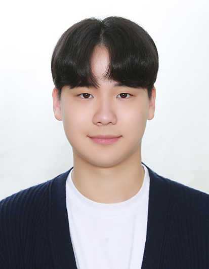
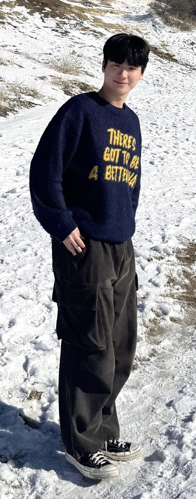

I was drawn to C++ for its powerful features — classes and object-oriented design, RAII for resource management, templates for generic programming, and the STL containers that replace manual memory juggling. Tackling challenges unique to C++ like smart pointer ownership, template compilation errors, and complex class hierarchies has been frustrating at times, but solving each one gave me a deeper understanding and genuine enjoyment of the language.
Through CS230, I built a 2D game engine from the ground up using raylib — implementing game object architecture, state machines, sprite and animation systems, and camera logic piece by piece. Watching the engine grow into a working framework was incredibly rewarding. Later in CS200, I transitioned it to an OpenGL-based renderer, learning the graphics pipeline and shader programming along the way.
Using the engines I developed, I've worked on several team game projects — including a first-person ski game built with raylib using Mode 7 rendering techniques, and a top-down tile-based turn-based strategy game. Through these experiences, I learned how to communicate effectively with teammates, resolve code conflicts and integration issues, and navigate disagreements within a team to keep the project moving forward.
Currently studying Computer Science at DigiPen-KMU, with a focus on computer graphics using OpenGL and data structures & algorithms. Alongside these core subjects, I'm also building a foundation in mathematics and physics to deepen my understanding of real-time simulation and game systems.
As a student, I've had the opportunity to form teams with diverse classmates and collaborate on game development projects from the ground up. These experiences taught me the value of clear communication, shared problem-solving, and bringing different perspectives together. Going forward, I want to continue growing as a developer by working with even more people and contributing to larger, more ambitious projects.

A selection of my range of projects
Art Lead, KEEP BREATHING (GAM100)
Oct 2024 - Dec 2024
Daegu, Korea
First game development experience in a team of 3. Led the art direction for a sea-themed fish
tycoon game over a 2-month period. Created all sprite assets and background art using Aseprite,
establishing the game's visual identity.
Game Programmer, Die Ski (GAM150)
Mar 2025 - Jun 2025
Daegu, Korea
Collaborated in a team of 4 to develop a first-person ski game using a custom raylib-based engine
with Mode 7 rendering techniques for a pseudo-3D perspective. Implemented scoring systems and
various in-game interactions, flexibly picking up tasks as needed throughout the 4-month
development cycle.
Game Programmer, Dragonic Tactics (GAM200/250)
Sep 2025 - Jun 2026
Daegu, Korea
Year-long team project with 5 members, building a top-down tile-based turn-based strategy game on
an OpenGL engine. Developed core systems including a Dice Manager, Map and Character Data Registry
for JSON parsing, and a Sound Manager using OpenAL for audio integration, alongside various other
gameplay features.
Head of Planning, DigiPen-KMU Student Council
2024 - Present
Daegu, Korea
Served as a planning committee member for 1.5 years before leading the department for 1 year.
Responsible for organizing and managing department events including orientation, retreats, Game
Jams, and various student activities. Duties ranged from public speaking at orientations to
scouting retreat venues, planning recreational programs, managing Game Jam logistics, and
coordinating students — all in close collaboration with fellow council members.
Digipen-KMU
2024 - 2026
Daegu, Korea
Relevant Courses: Game Engine Programming, Computer Graphics I & II, Data Structures & Algorithms,
Operating Systems, and more.